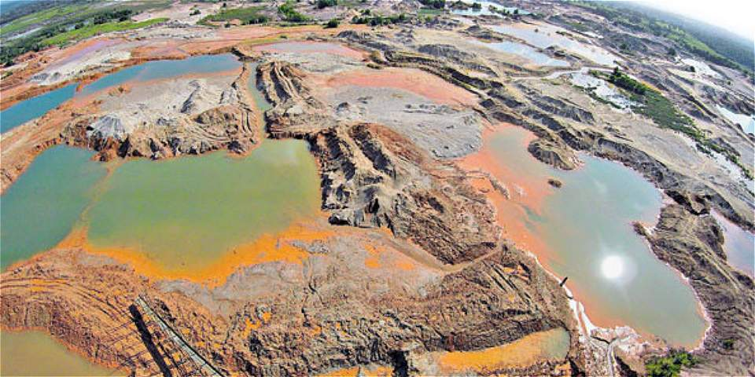

MINERIA ILEGAL DE ORO EN COLOMBIA |
|

|
|
La minería en nuestro país es un de las fuentes de ingresos de muchas personas de escasos recursos que aprovechan hacer la extracción de manera muy artesanal ya que el oro es uno de los pocos metales que se encuentra en la naturaleza en un estado relativamente puro y resiste la acción del fuego y del aire sin deteriorarse o experimentar daño alguno, al no perder su majestuoso brillo original, por ser anticorrosivo, en estado natural se reviste de una gran belleza, a esta cualidad hay que añadir que es color relativamente blando, pesado, de color amarillo brillante, excelente conductor de electricidad y calor y el más maleable y dócil que cualquier otro metal y puede trabajarse fácilmente con herramientas rudimentarias como el martillo u otras.
La extracción del oro aumento considerablemente, cambiando lo métodos y la forma de explotación, y las dinámicas, mas invasivas y hostiles se apoderan de esos territorios afectando el ecosistema y el medio ambiente
La minería legal e ilegal de oro representa una de las fuentes de contaminación ambiental más nocivas que existen, específicamente para las fuentes hídricas. En Colombia, las actividades mineras ilegales generalmente se hacen por medio de la minería por lavado y dragado, es decir minería a pequeña escala. El proceso implica la utilización de cianuro y mercurio para separar el oro de las demás sustancias extraídas en el proceso; esto constituye un daño ambiental sin precedentes, dado que la explotación deja residuos químicos en el agua, destruyendo fauna y flora y causando grandes impactos de salud en la poblaciones aledañas a las fuentes hídricas contaminadas, lo que con lleva a un daño por erosión y desforestación y la destrucción del paisaje.
La minería ilegal, la cual deriva su nombre por su forma de operar, funcionando sin permiso por parte del estado o autoridades minero ambientales, y sin las más mínimas normas de seguridad industrial y ambiental originando como consecuencias permanentes tragedias con pérdidas de vidas humanas, donde observan con impotencias como asesinan y desplazan a sus comunidades y destruyen a sus territorios ancestrales generando un problema humanitario a lo largo del territorio nacional que cada día con gran tristeza va en aumento y no se ven soluciones para minimizar esta problemática que aqueja a las regiones más desfavorecidas que buscan en este modo de solucionar sus insuficiencias económicas con la extracion del metal precioso, poniendo en riesgo su propia vida. |